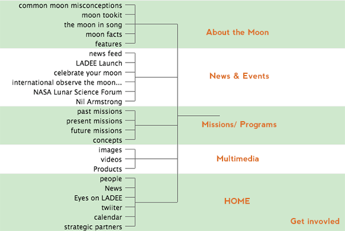
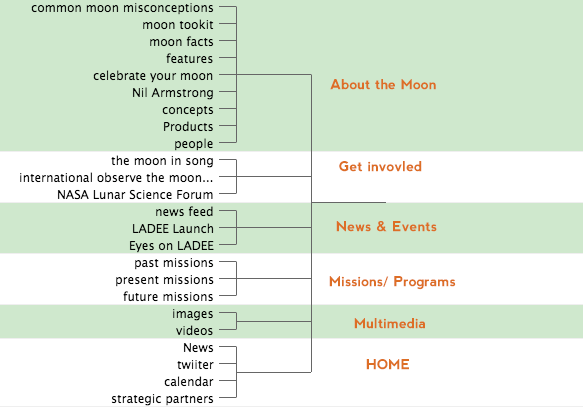
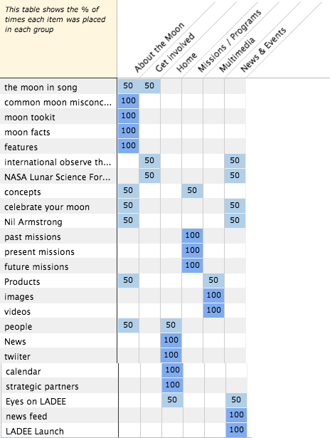
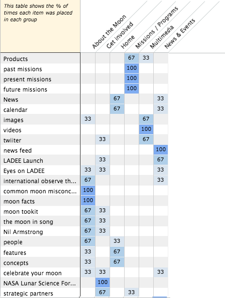

Because the NASA's moon website is an existing website. I used closed card sorting, which means that participants are asked to place relevant items into categories that are already provided, to examine different sorting patterns. I used WebSort to create a card-sorting usability test and asked participants to sort items on the website.
Below is the original structure on NASA's website:
Here is the structure that placed by myself:
The result:
The result shows that I tend to sort "the moon in song", "international observe the moon night" and "NASA lunar Science Forum" into the category of "Get Involved". But in fact, this category is independently placed on the page. Only in one part the similarity is near 100%. It is "Missions / Programs". I think it's because the same word "missions" appears repeatedly in the name of the category and items. In order to emphasize the mission - LADEE, NASA places it on the home page. I know basically nothing about it so I just placed it in "News & Events". But in my opinion, it's better to put something new and important on the home page. NASA placed "Products" into the category of "Multimedia", which it's a little confusing if you don't know the kind of products. I sort "celebrate your moon", "Nil Armsrong", "features" to the category of "About the Moon", which differs from the original sorting. It's hard to determine which sorting is better just depending on names of items and categories. For example, the reason why "features" is sorted to "News & Events" is that it contains updating news about the moon, not just explains moon's features.
It's hard to determine which sorting is better unless you know what kind of information you want to put in each items. It's one limitation of card sorting. I think it will work better in organizing general business websites.
Part 2 is about the analysis between my sorting and other three participants' sortings. Below is the data collected from three participants:
As we can see, all three particpants sorted "past missions", "present missions", and "future missions" into the category "Missions / Programs". It's exactly the same as my sorting. Otherwise, we placed "videos", "news feed", "common moon misconceptions", "NASA Lunar Science Forum" and "moon facts" to same categories either. Instead of choosing to show twitter on the home page as I did, two participants sort it into the category of "Multimedia". Majority of participants chose to place "concepts" and "features" on the home page, which differs from my sorting, too.
Because I've browsed the website before, to some extent, my sorting was affected by the original structure. But those three participants didn't view this website before, I guess the reason why they placed "concepts" and "features" on the home page is that they may think that it's better to show people some basic knowleadge about the mooon at the first glance of the website.